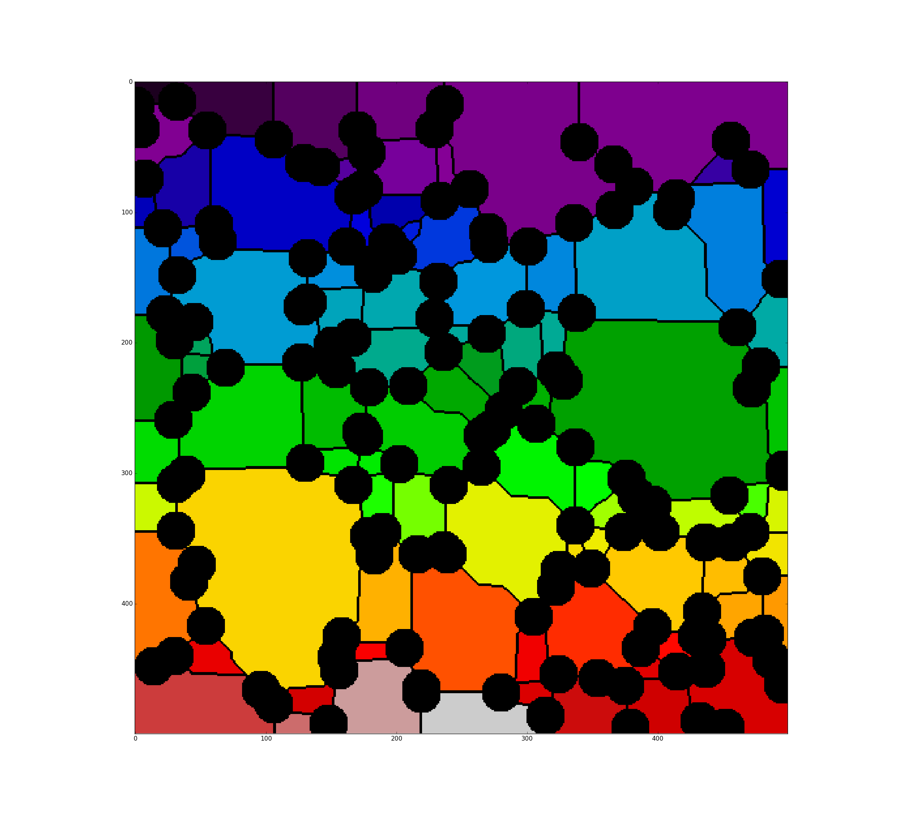
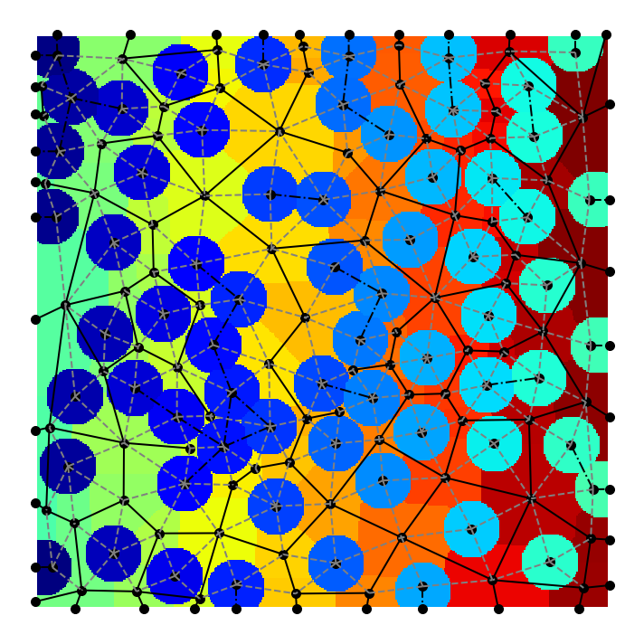
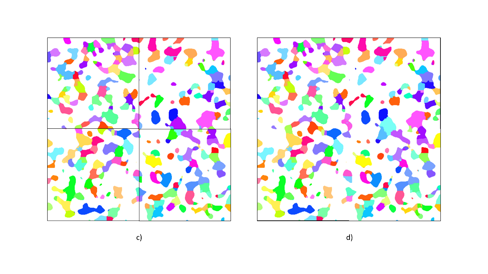
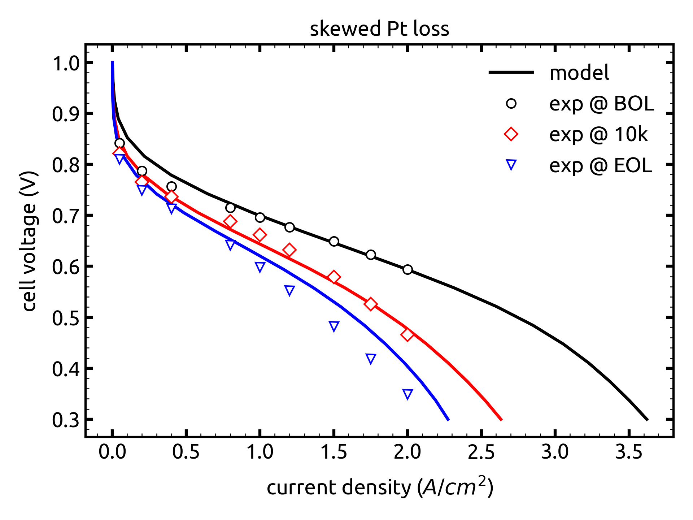

Creating a Detailed Pore-Scale Model of the PEMFC Catalyst layer using OpenPNM and PoreSpy
A few days ago our lastest paper went “live” in Applied Energy. I don’t normally post announcements about this sort of thing, but this case is noteworthy. Firstly, it’s a really great paper, with contributions from more collaborators than usual. Shawn Litster’s group at CMU provided volumetric images. Researchers from the fuel cell research team at GM provided the experimental performance and degradation data. Dave Muller’s group from Cornell measured the Pt distribution in the catalyst layer. So lots of brain power was behind this work…but that is not the part I want to brag about. This paper represents the culmination of all the work conducted in the PMEAL lab over the last 5 years, and I wanted to take a moment to summarize just how many developments were required to get here.
Multiphase Network Extraction
The ability to reliably extract pore networks from images has always been a challenge. Martin Blunt has been generous with sharing of his group’s MaximalBall code since he published it in 2010, but this code was not exactly user friendly. In 2017 I moved from McGill to UWaterloo and had a few semesters in a row with no teaching. This turned out to be the perfect opportunity to work on our own network extraction code, which we called SNOW (since catchy acronyms are always a good idea!). Having our own extraction code, written in python, and frankly quite simple, was a huge boost for us since we could customize and optimize it at will. We leveraged this ability to make several important extensions to the code.

At some point we realized that not only could the network extraction be applied to both the solid and void phases, but also that we could connect these two networks to allow exchange of material between the phases. This was the subject of a paper in Computers in Chemical Engineering, and utilized for modeling Li-ion battery discharge. Interconnected, multiphase network extraction is essential for ‘multiphysics’ modeling in PNMs.

Parallelized Network Extraction
The watershed filter is the main step in the SNOW algorithm, but it can be annoyingly slow on large images. In 2020 we found that this filter could be applied to an image in chunks and then pieced back together to nearly perfect results, if a sufficent amount of overlap was used between the chunks. The ability to process many chunks in parallel is obviously quite handy when dealing with massive images, assuming you have a PC with lots of cores and enough RAM.

4-Phase Network Extraction of a 2nm/voxel pFIB-SEM Image
The above progress in network extraction allowed us to build “the ultimate” pore network model of a fuel cell catalyst layer. These layers consist of FOUR phases: void, ionomer, carbon and platinum. Gas diffusion in the void space and dissolves into the ionomer phase. Ions travel through the ionomer phase and meet dissolved gas at the catalyst sites. Electrons travel through the carbon backbone to the reaction sites as well. The transport of all these species is directly coupled to the microscopic structure of each phase so this problem is a great candidate for PNMs.
We started applying our multiphase network extraction tool to artificially generated images, and gave a talk about this at an ECS meeting. Shawn Litster was in the audience and mentioned that he had REAL images of catalyst layers obtained with FIB-SEM at 2nm voxel resolution (in all three directions!). So we switched to working on these images. This required some experimenting with ways to insert carbon spheres and Pt sites into the image, but eventually we had a viable image. The problem was that even with such excellent resolution, the network extraction tool had trouble with the smaller features…so we had to magnify the image by 4x.
So we had 4 phase image that was already quite large (1600 voxels cubed) that was zoomed up by another factor of 4, and we needed to perform multiphase network extraction on it. This felt like all the hard work over the past 5+ years was leading to this moment. The results speak form themselves:

Multiphysics Simulation of PEMFC Polarization Curves
The pictures look great, but the model worked great too. We were able to predict the polarization behavior of the cell at “beginnng of life” (i.e. new) and after accelerated stress tests caused catalyst degradation. The interesting thing about this result is that we were able to capture most of the degradation just by deleting Pt sites from the network, in proportion to the loss of Pt surface area. There must be a few other mechanisms occuring too, but considering only this single, simple thing was enough to largely describe the trends.

Conclusion
So big congratulations to Amin Sadeghi, who was my PhD student then postdoctoral associate during the years the above work was being done. Also thanks to all the collaborators and contributors to this project.